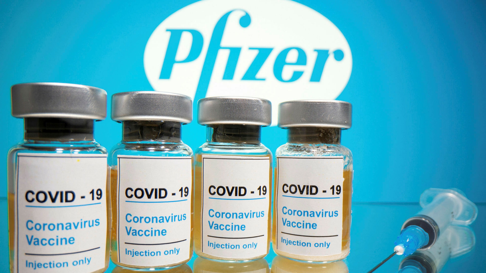
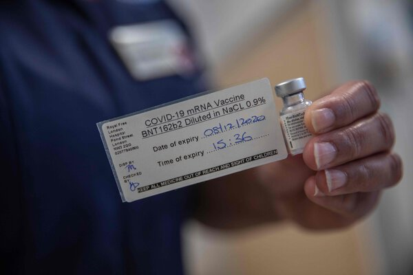

Pfizer Vaccine
About Pfizer Vaccine
Introduction
The Pfizer vaccine, also known as the Pfizer-BioNTech Vaccine is a vaccine that was a collaborative effort by the German company BioNTech. A clinical trial demonstrated that the vaccine has an efficacy rate of 95 percent in preventing Covid-19.
How does it work?
The SARS-CoV-2 virus is studded with proteins that it uses to enter human cells. These so-called spike proteins make a tempting target for potential vaccines and treatments. Like the Moderna vaccine, the Pfizer-BioNTech vaccine is based on the virus’s genetic instructions for building the spike protein.
The vaccine uses messenger RNA, genetic material that our cells read to make proteins. The molecule — called mRNA for short — is fragile and would be chopped to pieces by our natural enzymes if it were injected directly into the body. To protect their vaccine, Pfizer and BioNTech wrap the mRNA in oily bubbles made of lipid nanoparticles.
Who can take it?
Pfizer-BioNTech COVID-19 Vaccine is authorized and recommended for people 16 years of age and older.
The recommendation for Pfizer-BioNTech COVID-19 Vaccine should be implemented in conjunction with the Advisory Committee on Immunization Practices’ (ACIP) interim recommendations for allocation of COVID-19 vaccine. You may also consider sub-prioritization among recommended populations.
The Pfizer-BioNTech vaccine requires two injections, given 21 days apart, to prime the immune system well enough to fight off the coronavirus. But because the vaccine is so new, researchers don’t know how long its protection might last.
You should administer the second dose as close as possible to the recommended interval of 21 days after dose 1. However, if it is not possible to follow the recommended interval, you may schedule the second dose of Pfizer-BioNTech COVID-19 Vaccine for administration up to 6 weeks (42 days) after the first dose. There are currently limited data on efficacy of mRNA COVID-19 vaccines administered beyond this window. If the second dose is administered after these intervals, there is no need to restart the series.
Preparation and Injection
Each vial of the vaccine contains 5 doses of 0.3 milliliters. The vaccine must be thawed before injection and diluted with saline. After dilution the vial must be used within six hours.
Risk and Side effects
There will be some side effects when injected with the vaccine which lasts several days. Of note, more people experienced these side effects after the second dose than after the first dose, so it is important for vaccination providers and recipients to expect that there may be some side effects after either dose, but even more so after the second dose.
A list of side effects that may arise is:
- pain at the injection site
- tiredness
- headache
- muscle pain
- chills
- fever
Timeline of the Pfizer vaccine
A rough timeline of the process of the vaccine:
- January, 2020 BioNTech begins work on a vaccine after Dr. Ugur Sahin, one of the company’s founders, becomes convinced that the coronavirus will spread from China into a pandemic.
- March BioNTech and Pfizer agree to collaborate.
- May The companies launch a Phase 1/2 trial on two versions of a mRNA vaccine. One version, known as BNT162b2, had fewer side effects.
- July 22 The Trump administration awards a $1.9 billion contract for 100 million doses to be delivered by December, with an option to acquire 500 million more doses, if the vaccine is authorized by the Food and Drug Administration.
- Sept. 12 Pfizer and BioNTech announce they will seek to expand their U.S. trial to 44,000 participants.
- Nov. 9 Preliminary data indicates the Pfizer vaccine is over 90 percent effective, with no serious side effects. The final data from the trial shows the efficacy rate is 95 percent.
- Dec. 2 Britain gives emergency authorization to Pfizer and BioNTech’s vaccine, becoming the first Western country to give such an approval to a coronavirus vaccine.
- Dec. 8 William Shakespeare, age 81, is among the first people to receive a shot of the vaccine in Britain, on the first day of vaccinations for at-risk health care workers and people over 80.
- Dec. 31 Pfizer expects to produce up to 50 million doses by the end of the year, and up to 1.3 billion doses in 2021. Each vaccinated person will require two doses.